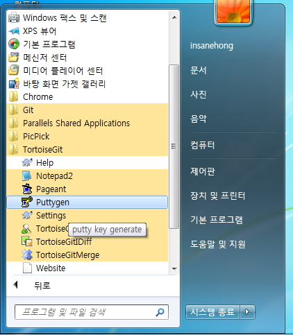

About Author

Insanehong
blog: http://insanehong.kr
twitter: @insanehong
github: insanehong.github.com
- NAVER Corporation, Front-End Engineer(2013~)
- Like Javascript, Dart, HTML5, CSS3,Responsive Web, Haroopress, Frends, Lean Startup, Open Source
- Hackrslab co-founder
- About me http://about.me/insanehong
About this Article
Date Released:
Tuesday, May 28 2013 11:56 AM윈도우 사용자를 위한 git client 설치
Guide to Git for Windows
이 글은 팀내 Windows OS 사용자를 위하여 Git 설치 및 업무환경 세팅에 대하여 사내 위키 문서에 정리해 놓은 내용을 옮겨온 것입니다.
Windows 7 을 기준으로 작성 되었으며 GUI 특히 tortoiseSVN 에 익숙한 사용자 경험을 원하는 분들을 위하여
TortoiseGit 의 설치와 CLI를 사용하기 원하는 분들을 위한 mysysgit의 설치 과정을 담고 있습니다.
TortoiseGit 설치하기
1. 다운로드 페이지 본인 컴퓨터에 맞는 설치 파일을 다운로드 받습니다.
2. 다운로드된 파일을 실행 합니다.
3. 다음의 예시와 같이 설치를 진행 합니다.

4. 설치가 완료되면 마우스 오른쪽 버튼을 눌러 TortoiseGit 이 제대로 설치 됬는지 확인 합니다.
ssh public key 만들기
github, gitlab, bitbucket 등을 이용하거나 별도로 구축한 원격의 저장소를 이용하기 위해서는 ssh key 가 필요합니다.
이후에 얘기할 msysGit을 이용하면 몇줄의 commendinfo 입력으로 간단하게 만들수 있지만 일단 windows 환경에서 PuTTYgen 을 이용하여 만드는 법을 소개 합니다.
1. 윈도우 시작 > TortoiseGit 안에 있는 PuTTYgen 을 실행 합니다.

2. PuTTY Key Generator 실행 화면에서 Generate 버튼을 클릭 합니다.
3. 표시된 영역에서 progress bar가 100%가 될때까지 마우스를 움직입니다.
4. 키 생성이 완료되면 Save Button 이 활성화 됩니다. password 를 사용하는 경우 비밀번호를 입력하고 Save Private Key Button 을 클릭합니다.
5. 적당한 곳에 적당한 이름으로 저장합니다. ( 예제에서는 C:\Users{username}.ssh 디렉토리를 생성하고 key 라는 이름으로 저장 하였습니다.)
- public key 부분도 복사하여 별도의 파일로 저장해둔다. (추후 repository server에 public key를 등록해야한다.)
CLI 사용을 위한 msysGit 설치
Git은 여러모로 GUI보다는 CLI 에 최적화 있기 때문에 윈도우 사용자 중 CLI를 이용하고 싶은 분만 따라 하시면 됩니다. GUI 를 선호하시는분은 Skip 하셔도 됩니다.
1. msysGit Download 사이트로 접속후 최신버전의 설치 파일을 받습니다. (git-버전.preview배포일자.exe)

2. 다운로드 받은 파일을 실행 합니다.
3. 다음의 안내와 같이 설치를 진행 합니다.